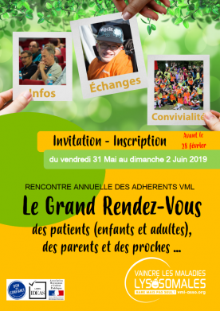

Week-end des familles VML 2019
L'association VML organise chaque année une rencontre de toutes les familles membres de l'association.
Week-end des familles VML
Chaque année, l'association VML organise à Nouan-le-Fuzelier (au sud d'Orléans) un week-end de rencontres qui réunit les familles de patients atteints de maladies lysosomales. Les objectifs de ces journées sont multiples :
- Permettre aux enfants malades et à leurs fratries de vivre ensemble des moments conviviaux, avec des activités motivantes et exceptionnelles
- Permettre aux parents de rencontrer des professionnels de santé et d'éducation experts dans l'accompagnement des patients atteints de maladies lysosomales
- Permettre aux parents de se rencontrer entre eux, et d'échanger sur leurs quotidien
L'édition 2019
Le prochain week-end des familles se déroulera du 30 mai au 2 juin 2019. N'hésitez pas à contacter l'association VML pour plus d'information.
Le week-end précédent
Le week-end précédent s'était déroulé en 2018, et nous proposons sur ce site un compte-rendu des discussions qui y ont eu lieu.